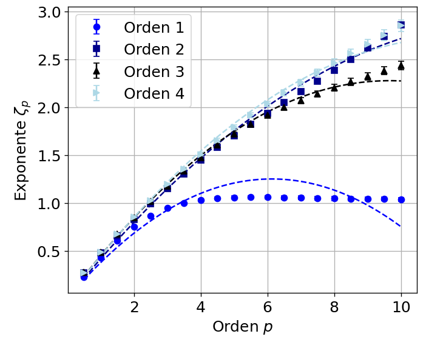

Journal Week 34
Table of Contents
Referencias
2026-08-20
[09:45]
Mientras seguimos esperando que impriman los tornillos para poder avanzar con el setup, me puse a calcular las funciones de estructura para las mediciones últimas en la rampa prototipo. El escaleo de los exponentes da lo siguiente:

Para el sensor después de la rompiente con \(\tau\) entre 125 y 250 ms, que se corresponde al rango que ajusta bien el espectro de Bonneton. Además hay varias cosas interesantes. Po run lado la pendiente inicial está cercana al valor esperado para un espectro de \(E(\omega)\sim^{-2}\), ya que sigue la regla de \(-(n+1)/2\), que en este caso da \(\zeta_p\sim1/2p\).
Además, para las diferencias de primer orden se estancan los exponentes, muy similar a lo que le pasa a Falcon con sus exponentes en (Ricard and Falcon 2023). Ahí igualmente usa las diferencias de orden 4 ya que su espectro tiene un exponenente bastante más empinado que en nuestro caso, pero habría que discutir sobre la validez de esto. Al aumentar yo el orden de las funciones de estructura convergen desde el orden 2 pero se parecen más a lo que se esperaba para turbulencia de ondas isótropa.